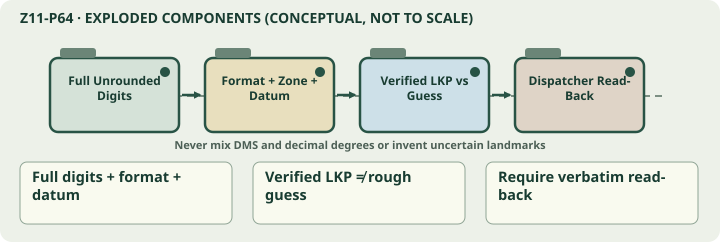

Z11-P64 · Navigation, weather and rescue · New manuscript
Communicate accurate coordinates, datum and last-known-point uncertainty
Prevent rescue delays caused by garbled digits, wrong datums or blurring guessed locations with verified facts.
When it applies · Relaying position data by voice, text, radio or written note to emergency responders or trip contacts.
Equipment · GPS/phone coordinate display, paper map and written verification note.

Actions
- Read every digit slowly using clear plain pronunciation, explicitly naming negative/hemisphere signs (North/West), decimal points, UTM grid zone and geodetic datum (WGS84/NAD83 vs NAD27).[N01, T06]
- Separate verified facts strictly from estimates: clearly label your last 100%-confirmed landmark and time ("passed Bear Creek Bridge at 14:10") apart from any rough guess of where you walked afterward.[T06, N09]
- Ask the receiver to read every coordinate digit and landmark back verbatim so transposition errors are corrected immediately on the line.[T06, ED]
Failure recognition · Rounding off trailing GPS decimals casually or giving a guessed lake name as a confirmed fact, misdirecting rescue teams to the wrong valley.[N01, T06, N09]
Verify · Confirm the dispatcher or contact read back your exact coordinate digits, format label and last confirmed trail landmark cleanly.[T06, N01, ED]
Stop or change course · If you cannot read coordinates reliably due to stress, cold or screen cracks, report plain verified landmarks and stay stationary rather than inventing numbers.[T06, N09]
Evidence and editorial notes
- N01 · USGS · US Topo Maps for America (current web edition)
- Section: US Topo Maps > Coordinate Grids, Scale and Currency · Conditions: Map reading and trip planning in the United States
Support: USGS topographic maps provide elevation contours, hydrography, roads, land cover and scale/date metadata; check publication date because trails, roads and structures change over time.
Limitations: Historical topo sheets (such as 1965 Ely quadrangle) illustrate symbols only and never establish current routes or declination. · Conflicting evidence: None; aligns with USGS-MAP-R and NOAA-D.
Editorial note: Grounds map margin, scale, date and historical-excerpt limits in Z11. · Specialist reviewer: Cartography and navigation
Primary source · checked 2026-11-24 - N09 · NPS · Outdoor Emergency Plan (current web edition)
- Section: If You Get Lost; Seek help · Conditions: Lost hiker who cannot safely retrace steps and has sought rescue
Support: Report last known location and landmarks. Stay put while awaiting help unless an immediate threat requires getting to safety.
Limitations: Navigation, signaling method and safe movement depend on site and responder instructions. · Conflicting evidence: See A02 claim audit for boundaries.
Editorial note: Core evidence for lost-person psychology, signaling and SAR coordination cards. · Specialist reviewer: Search and rescue
Primary source · checked 2026-11-24 - T06 · NPS · Outdoor Emergency Plan (current web edition)
- Section: If you get lost or hurt; call for help · Conditions: Outdoor US emergency
Support: Communicate location, last known point, situation and needs. Stay put when unable to establish a safe route unless immediate danger requires movement.
Limitations: Cell signal is unreliable in backcountry terrain; pre-trip plans bridge communication gaps. · Conflicting evidence: None; core lost-person decision rule.
Editorial note: Foundation for stay/signal/move and dispatch handoff cards. · Specialist reviewer: Search and rescue
Primary source · checked 2026-11-24
Source lineage · USGS US Topo and NPS emergency plan; new manuscript · Classification · New manuscript.